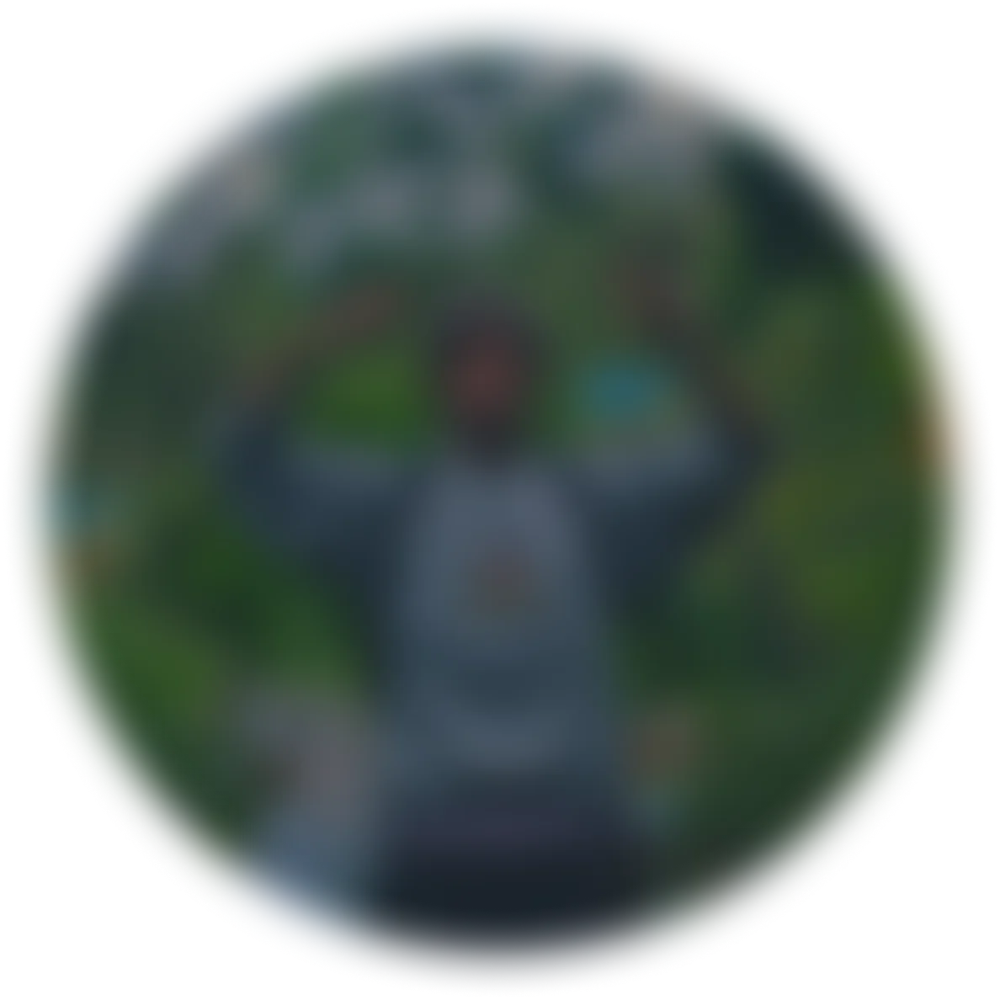
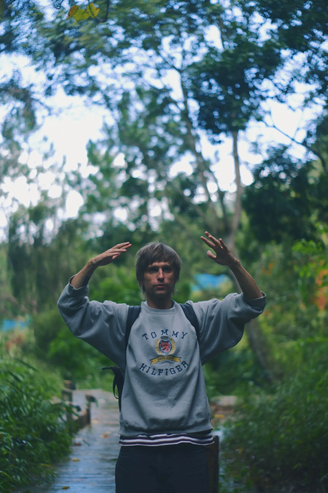

АнтонШатковский
Структурирую пространство и выделяю
главное. Минимализм и внимание
к клиенту
Start a project ↓︎
Структурирую пространство и выделяю
главное. Минимализм и внимание
к клиенту

Дзен-
графика
Я рисую горы, воду и облака. Почему именно их, сам не знаю, просто они мне не надоедают. Передать их красоту на бумаге у меня не получается, и я перестал из-за этого расстраиваться. Мне нравится сам процесс.
(38) Тушь на бумаге
Хайку Мацуо Басё
Листайте, чтобы плытьНажмите на рисунок, чтобы рассмотреть
Дальше: контакты ↓︎